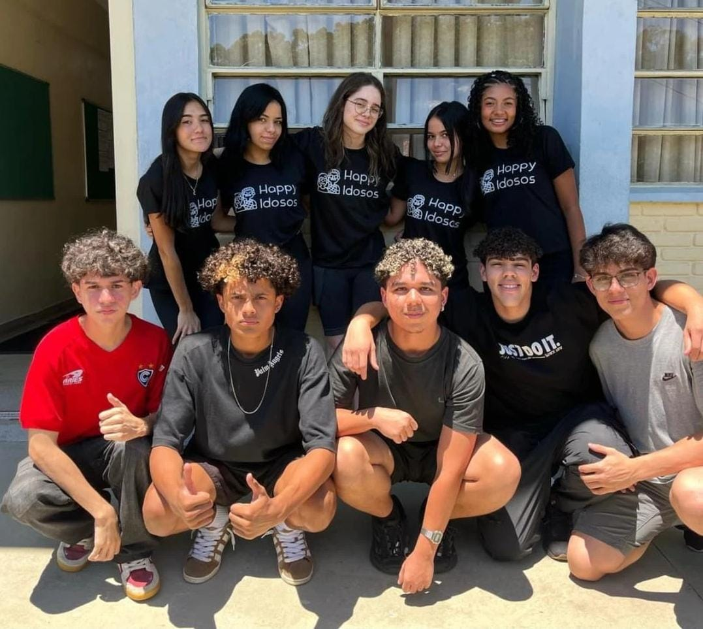

.jpg)

História do Projeto
O Happy Idosos nasceu da integração de três vertentes metodológicas que se complementam: a investigação teórica (bibliográfica e exploratória), a observação direta da realidade (pesquisa de campo) e a experimentação prática por meio do desenvolvimento de uma aplicação digital. Essa escolha metodológica foi guiada pela intenção de compreender a fundo o cenário estudado, idealizar uma solução significativa para os envolvidos e testar, na prática, sua aplicabilidade.
A etapa prática do projeto consistiu no desenvolvimento da aplicação digital, fundamentado nas demandas identificadas nas fases anteriores. Utilizamos a metodologia aplicada, organizando as atividades por meio do Microsoft Planner, o que facilitou a divisão de tarefas, o acompanhamento do progresso da equipe e o registro contínuo no diário de bordo digital. A plataforma, construída com PHP, MySQL, JavaScript e CSS, teve suas funcionalidades priorizadas com base nos dados da pesquisa, e a interface foi pensada com foco em usabilidade, acessibilidade e adequação ao público-alvo.
Antes disso, foi realizada uma pesquisa de campo com alunos e professores da Etec Profª Maria Cristina Medeiros, que contribuíram com opiniões diversas sobre o tema da interação intergeracional. A pluralidade das respostas, oriunda de diferentes faixas etárias, enriqueceu significativamente a construção do projeto, proporcionando um panorama mais amplo sobre as percepções juvenis a respeito dos idosos institucionalizados.
Paralelamente, o Design Thinking foi adotado como metodologia transversal em todas as fases do projeto. Da Imersão à Síntese, a abordagem guiou a equipe na escuta ativa, na definição de problemas reais e na criação de soluções empáticas voltadas às necessidades específicas dos idosos em asilos.
O ponto de partida foi a pesquisa bibliográfica e exploratória, que permitiu um mergulho nos desafios enfrentados por idosos em instituições de longa permanência, especialmente no que diz respeito à carência de vínculos afetivos. Desde o início, reconheceu-se o valor do contato entre gerações como ferramenta de transformação social com destaque para o voluntariado jovem como elo promissor entre esses dois mundos.
Nossa Equipe
Equipe de Recursos Humanos
Responsável pela gestão de voluntários, treinamentos e relacionamento com as instituições.
- Ana Caroline da Silva Santos
- Evellyn Soares Ferreira
- Giovanna Queiroz Carvalho
- Heloisa Emanuele Gonçalves Godinho
- Heloysa Beatriz Santos
Equipe de Informática
Responsável pelo desenvolvimento e manutenção da plataforma digital.
- Vinícius Araujo Ramos
- Tiago de Carvalho Estrada
- Lucas Martins Pereira
- Pedro Henrique Assunção Medeiros
- Wesley Mendes de Sousa

Nossa equipe multidisciplinar trabalhando juntos para transformar vidas
Nossa Missão
Conectar voluntários com asilos para promover o bem-estar dos idosos através de atividades significativas e relacionamentos intergeracionais.
Nossa Visão
Ser a principal plataforma de conexão entre voluntários e asilos no Brasil, transformando a vida dos idosos através do cuidado e carinho.

Nossos Valores
Empatia, respeito, solidariedade e compromisso com a dignidade humana em todas as fases da vida.
Faça Parte da Nossa História
Junte-se a nós nessa missão de transformar vidas e criar conexões significativas entre gerações.